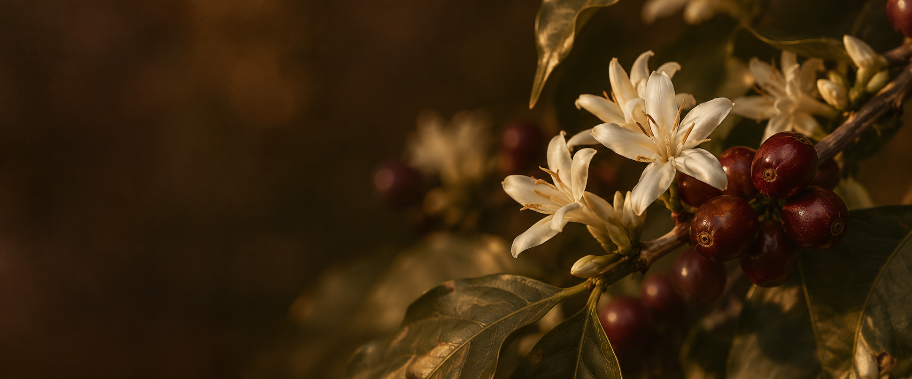

BLOSSOM SPECIALTY COFFEE BREW LAB
PRECISIÓN
QUE FLORECEen cada taza.
Un espacio para explorar el café.
Una forma más tuya de
prepararlo.
DEL ORIGEN A TU TAZA
El detalle hace la diferencia.
EXPLORA. AJUSTA. VUELVE A PREPARAR.01 / EL LABORATORIO
Diseña tu preparación.
Una buena taza comienza con una intención.
Dale forma, una
variable a la vez.
RECETAS
VISTA PREVIA · DATOS DE REFERENCIA
LA ESENCIA DE BLOSSOM
La curiosidad abre el camino.
Tu paladar lo descubre.
Observa lo que cambia. Anota lo que encuentras.
Vuelve a esa
taza que te hizo detenerte.